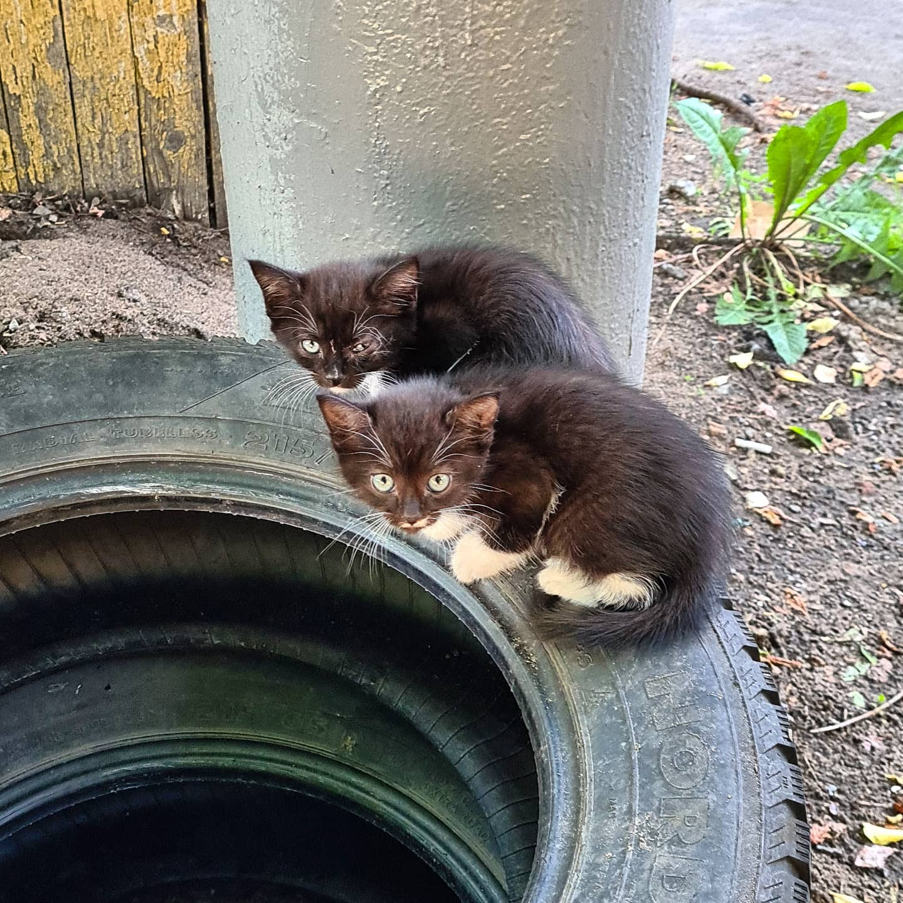
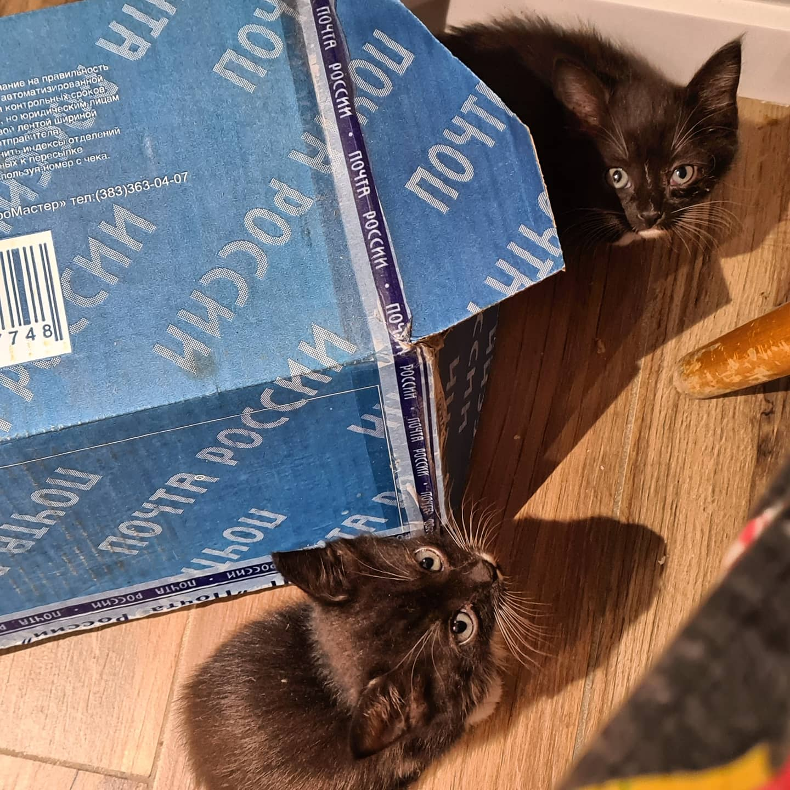
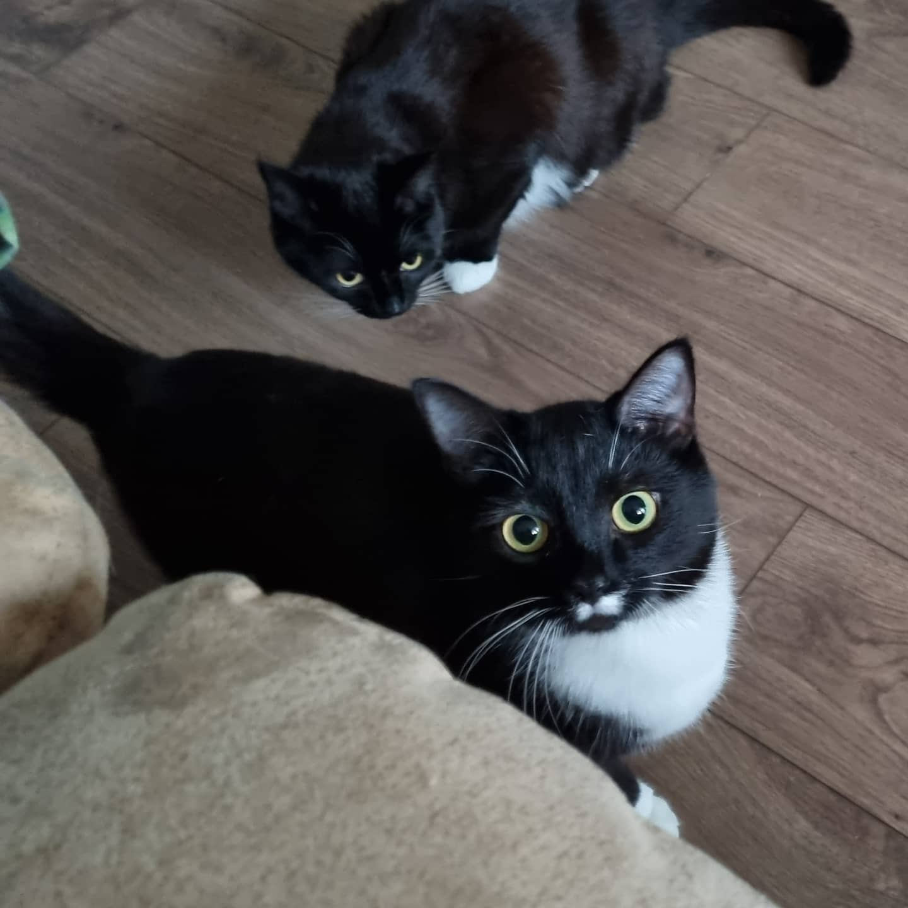
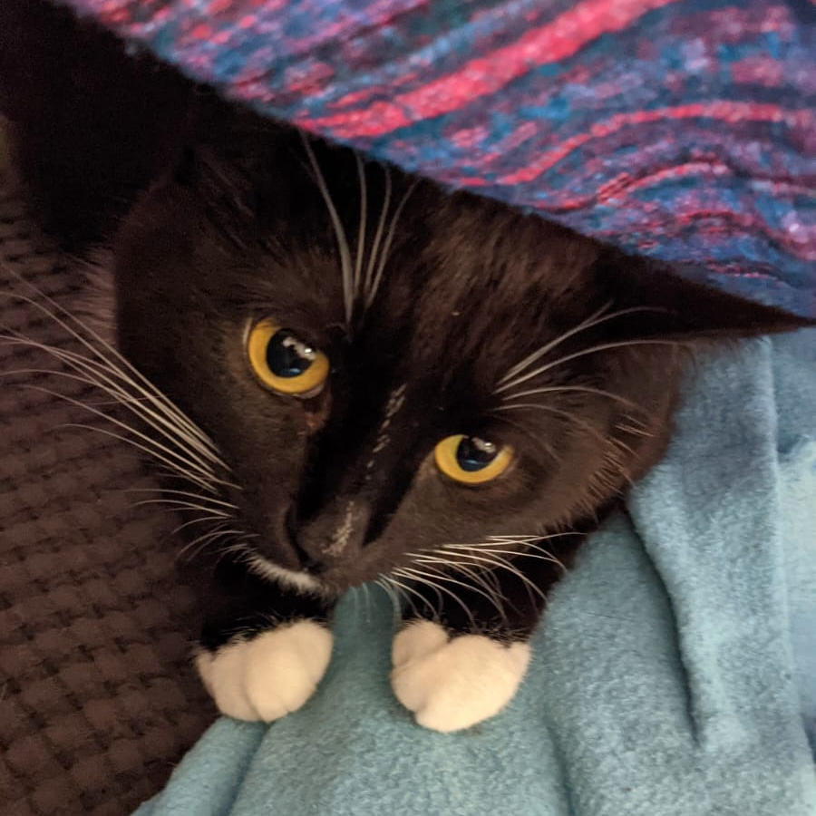
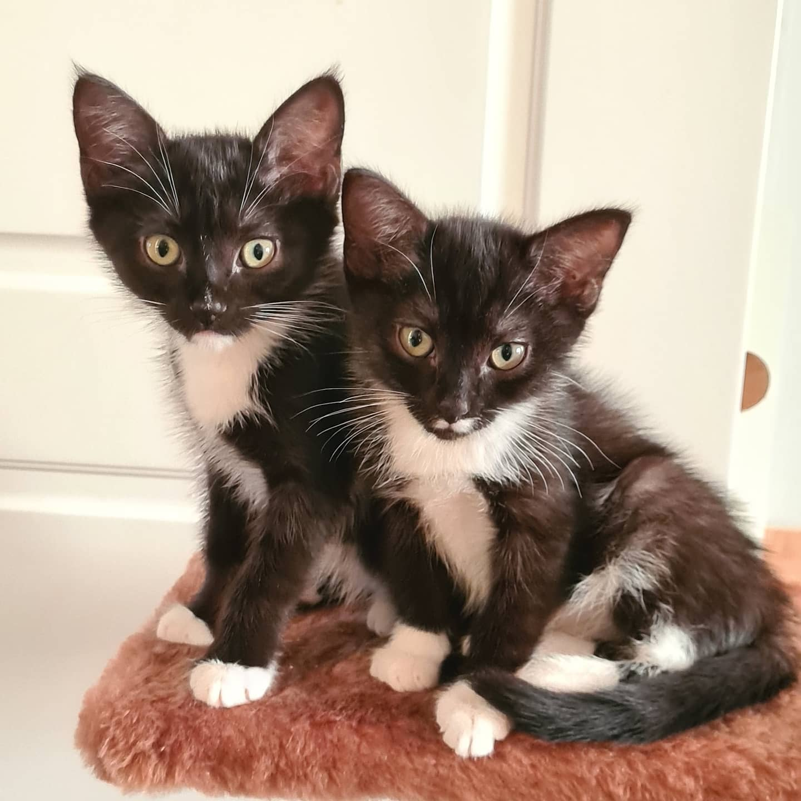
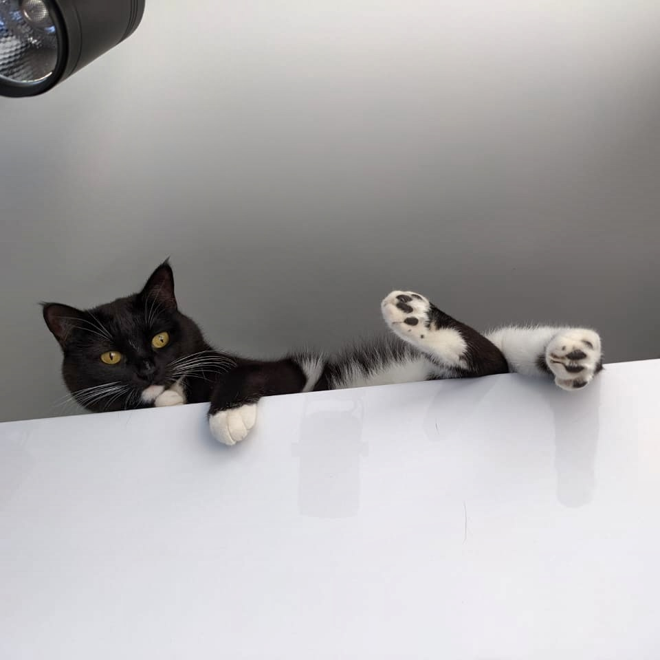
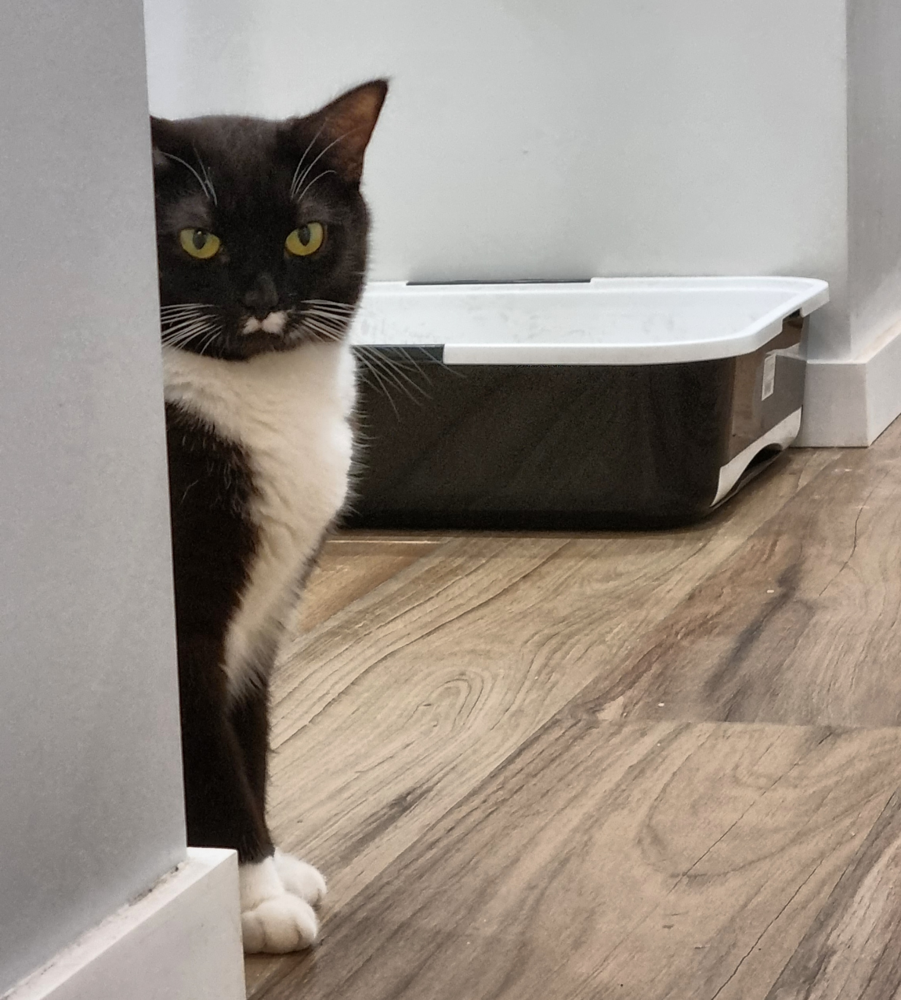
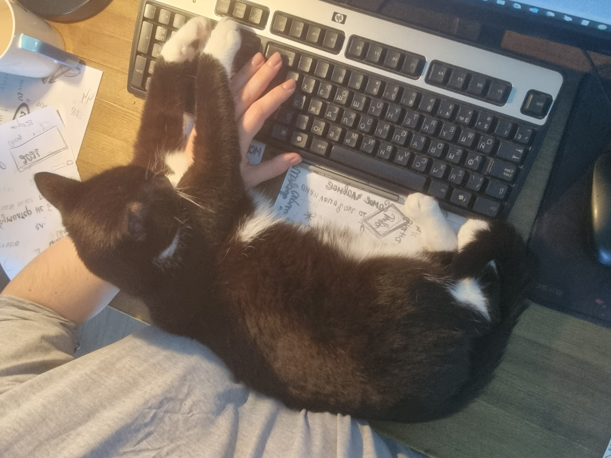
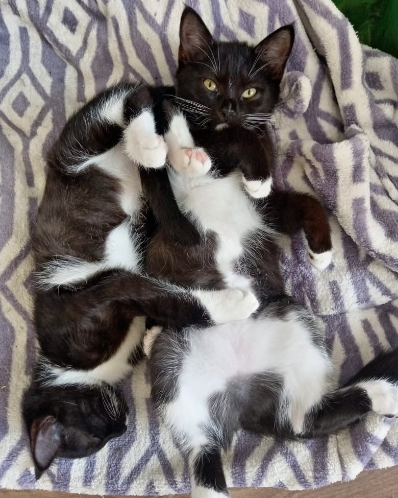

Живу в городе Москва, работаю в Госкорпорации "Росатом", учусь в GeekBrains.

Меня зовут Екатерина. Мне 31 год.
Живу в городе Москва, работаю в Госкорпорации "Росатом", учусь в GeekBrains.
О себе лучше рассказывать в диалоге, поэтому расскажу о своих кошках.
Так вышло, что у меня их две:
В ковидный 2020 год я возвращалась с работы и на перекрестке
рядом с шиномонтажом громко кричал котенок.
Обычно меня это не очень трогает, т.к. у нас во дворе у дома очень много прайдов.
Но у шиномонтажа не могло быть кошек, там просто-напросто им негде жить
Идя на писк, я увидела двух котят

Это их первая фотография
Было принято решение их забрать и попытаться пристроить

Первый день дома
Оказалось пристроить 5-ти недельных котят не так уж и просто.
В приютах отказывались их брать раньше 2-х месячного возраста.
По одной отдавать не хотелось, они очень друг к другу привязаны, а сразу двоих брать никто не хотел.
В итоге, пока ждали 2-х месяцев, мы к ним настолько привыкли, что оставили себе.
Очень долго кошки ходили безымянными.
Между собой, чтобы было понятно о ком мы говорим, мы называли их Усатая и Полосатая - по отличительным чертам на мордочке.
Белые "усы" у одной и полоски на носу, похожие на веснушки, у другой.

"Усы" Миры

"Веснушки" Киры
Согласись, имена так себе.
Был устроен мозговой штурм, по результату которого приняли решение назвать их Милина и Китана
Но, т.к. выговаривать каждый раз, зовя их к себе, было сложновато, и зная, что для кошек понятнее, когда в их имени есть буква Р, то сократили до Мира и Кира
Поначалу их было сложно отличить. Пока они были котятами, они были очень похожи.

Сейчас они схожи только окрасом и тем, что очень разговорчивые и эмоциональные. Все свои действия сопровождают различными звуками и разговором.
В остальном - разные:
Еще немного фото с ними:

Кира

Мира

Так я работаю и также учусь :)

А так они спят